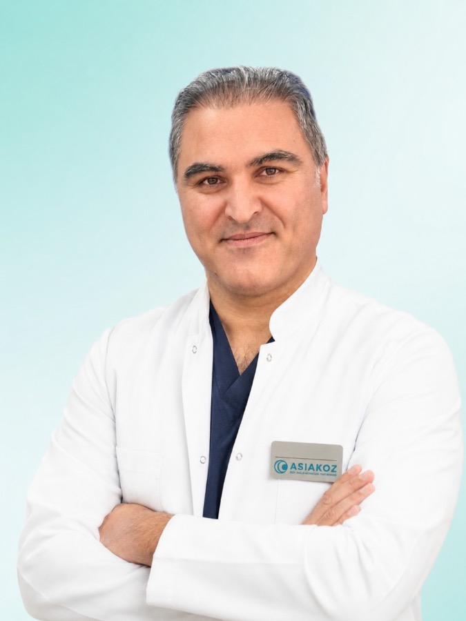

Филиалы Актау и Шымкент · Азиякоз
Али Кескин
Ведущий офтальмолог и хирург из Турции
Опыт: 3500+ витреоретинальных, 15 000+ катаракта, 3000+ косоглазие, 10 000+ глаукома.
Специализируется на сложных операциях: разрыв макулы, косоглазие, отслойка сетчатки, лечение слезных каналов, глаукома и др.
Доктор Али Кескин — ведущий офтальмолог и хирург из Турции. Запишитесь на прием уже сегодня.
3500+
витреоретинальных
15 000+
катаракта
3000+
косоглазие
10 000+
глаукома
Доктор Али Кескин — ведущий офтальмолог и хирург из Турции. Приём в клиниках Азиякоз Актау и Шымкент.
Специализация
Разрыв макулы
Сложная витреоретинальная хирургия.
Косоглазие
Хирургическое исправление косоглазия.
Отслойка сетчатки
Операции при патологиях сетчатки.
Лечение слезных каналов
Хирургия слезных путей.
Глаукома
Хирургическое и комплексное лечение глаукомы.
Другие сложные случаи
Комплексные офтальмологические вмешательства.
Направления
Запишитесь на прием уже сегодня
Актау: 7а микрорайон, 11/3 — +7 775 863 01 80
Шымкент: Байтұрсынов көшесі, 86/7 — +7 708 075 01 80